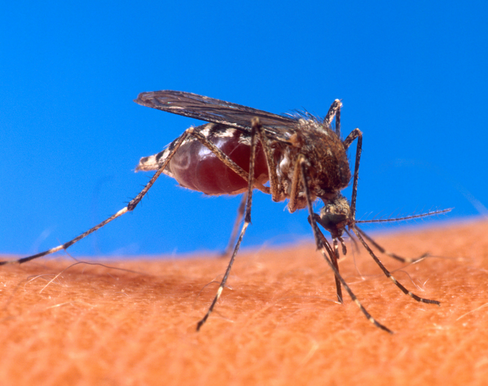

Información general sobre el dengue
Imagen

Descripción
El dengue es una enfermedad viral transmitida por la picadura de mosquitos infectados del género Aedes, especialmente Aedes aegypti. Es común en regiones tropicales y subtropicales, y puede afectar a personas de todas las edades. Existen cuatro serotipos del virus del dengue, y una persona puede infectarse más de una vez. La enfermedad puede manifestarse de forma leve o evolucionar a formas graves como el dengue hemorrágico o el síndrome de choque por dengue, que pueden ser mortales.
Causas
- Picadura de mosquitos infectados con el virus del dengue
- El mosquito se infecta al picar a una persona con dengue y luego transmite el virus a otras personas
- No se transmite directamente de persona a persona
Síntomas
Los síntomas suelen aparecer entre 4 y 10 días después de la picadura e incluyen:
- Fiebre alta (hasta 40°C)
- Dolor de cabeza intenso
- Dolor detrás de los ojos
- Dolor muscular y articular
- Náuseas y vómitos
- Erupciones en la piel
- Fatiga y debilidad
- Sangrado leve (encías, nariz)
- En casos graves: dificultad respiratoria, sangrado interno, daño orgánico
Tratamiento
Aunque no existe un tratamiento antiviral específico para el dengue, el manejo clínico busca aliviar los síntomas, evitar complicaciones graves y asegurar una recuperación segura:
- Reposo absoluto
- Hidratación oral o intravenosa
- Control médico para vigilar signos de alarma
- Uso de antipiréticos como paracetamol (evitar aspirina o ibuprofeno)
- Hospitalización en casos graves